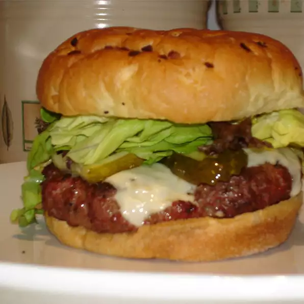

Burger Recipe

A delicious homemade burger recipe!
This recipe has been passed down for generations and enjoyed by many
throughout the years! You and your family will enjoy this burger for years
to come!
Ingredients:
- 2 pounds extra-lean ground beef
- 1 (1 ounce) package dry onion soup mix
- 1 egg, lightly beaten
- 2 teaspoons hot pepper sauce
- 2 teaspoons Worcestershire sauce
- ¼ teaspoon ground black pepper
- ¾ cup rolled oats
Instructions:
-
Preheat an outdoor grill for medium high heat and lightly oil grate.
-
In a large bowl, combine the beef, onion soup mix, egg, hot sauce and
oats. Shape into 6 patties.
-
Grill patties over medium high heat for 10 to 20 minutes, or to desired
doneness.